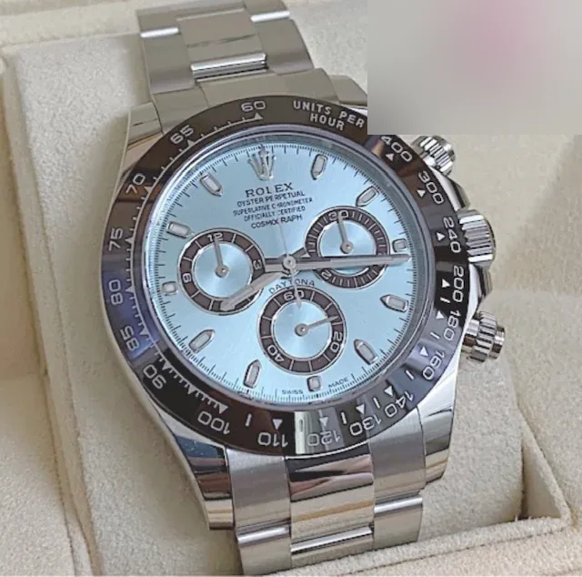

このモデルの特徴と査定の基本
126500LNは、ロレックスのクロノグラフ「コスモグラフ デイトナ」のステンレススチール（オイスタースチール）モデルです。黒のセラミックベゼル（セラクロム）を備え、文字盤はホワイトとブラックの2種類があります。
査定では、文字盤カラー、保証書（ギャランティカード）の有無と日付、ケースやブレスレットの状態、動作状態の4点が軸になります。上の表とグラフの中央値は「標準的な個体の目安」として、ご自身の時計に近い条件で表を絞り込んでご覧ください。
ロレックスは国内定価の改定が行われることがあり、定価の動きは中古の買取水準にも影響します。上の定価推移表と折れ線グラフを並べて見ると、改定前後の実績の動きを確認できます。
査定額を左右するポイント
126500LNの主な査定項目を表にまとめました。時計は外観だけでなく、機能面の確認も査定に含まれます。
| 項目 | 確認する内容 | 査定への影響の考え方 |
|---|---|---|
| 文字盤カラー | ホワイト文字盤かブラック文字盤か | カラーごとに需要が異なり、時期によって評価の差が動くことがあります。実績表で比べてください。 |
| 保証書・購入時期 | 国際保証書（ギャランティカード）の有無、記載された購入日 | 保証書の有無は評価に影響しやすい項目です。購入日が新しい個体は評価されやすい傾向があります。 |
| ケース・ベゼル | ケースの打痕・小傷、セラミックベゼルの欠け、ラグの研磨跡 | セラミックベゼルは傷に強い一方、強い衝撃で欠けることがあります。研磨歴も確認します。 |
| ブレスレット | 伸び、小傷、コマの数、クラスプの状態 | 余りゴマの有無も確認します。コマが不足していると減額要素になる場合があります。 |
| 動作状態 | 精度、クロノグラフの作動、リューズ・プッシャーの操作感 | 不動や不具合があっても買取の対象になりえます。修理費を考慮して評価します。 |
| 付属品 | 箱、保証書、冊子、タグ、余りゴマなど | 付属品がそろっているほど完品としての評価につながります。実績表を付属品区分で絞り込めます。 |
状態別・付属品別の考え方
デイトナは日常使いされることも多い時計のため、ケースの角やクラスプに小傷が出やすい傾向があります。小傷の程度に加えて、研磨されているかどうか、研磨でケースの形が変わっていないかも確認します。
リューズやクロノグラフのプッシャーはねじ込み式のため、締め忘れや操作の癖によって不具合が出ることがあります。査定では、実際に操作して作動を確かめます。
付属品では、国際保証書の有無を特に重視します。箱や冊子、タグ、余りゴマがそろっていると、次の購入者にとって安心材料になり、完品としての評価につながりやすくなります。
上の実績表では、状態ランクと付属品区分で絞り込めます。文字盤カラーもあわせて、ご自身の時計に近い実績を見比べてください。

壊れていても買取対象になりうる？
止まってしまった、風防にヒビが入った、クロノグラフが動かないといった状態のロレックスも、当店では買取の対象としてご相談を承っています。修理にかかる費用を差し引いて評価するため、状態によっては修理前に売るという方法も考えられます。
当社の〇〇〇〇A 心斎橋店は、壊れたロレックスの買取を得意としています。不動の時計をご自身で開けたり、非正規の修理に出したりすると評価に影響する場合があるため、そのままの状態でご相談ください。
ご注意
裏蓋を開ける、リューズを無理に回すといった操作は、内部の損傷を広げることがあります。不具合がある場合は、状況をメモして査定時にお伝えください。
高く売るための準備
査定前の準備で、付属品の欠品や説明不足による減額を防げる場合があります。次の手順を参考にしてください。
- 保証書と付属品を探す国際保証書、箱、冊子、タグ、余りゴマを確認します。一部しかなくてもお持ちください。
- ブレスレットの汚れを軽く拭く乾いた柔らかい布で拭く程度にとどめ、研磨剤は使わないでください。
- 使用状況や修理歴をメモする購入時期、オーバーホール歴、不具合の症状を書き出しておくと査定がスムーズです。
- 条件の近い実績を確認する上の実績表を状態ランクと付属品区分で絞り込み、目安を把握しておきます。
- 実物の査定で金額を確認する店頭・宅配・LINEの査定を利用し、最終的な金額は実物で確認します。
腕時計の査定は当店へ（電話・LINEで無料相談）
どちらの店舗でも査定・ご相談を承ります。2店舗の違いと選び方
ロレックス全般の査定ポイントはロレックスの買取ガイド、腕時計全般は時計の買取ガイドで解説しています。同じロレックスのスポーツモデルとしてサブマリーナー デイト 126610LNの買取相場もあわせてご覧ください。全モデルは相場トラッカー一覧から確認できます。
よくある質問
保証書がないデイトナでも買取してもらえますか？
はい、保証書がなくても買取の対象になります。本体の刻印や仕様で確認を行います。上の実績表で「一部欠品」や「本体のみ」に絞り込むと目安を確認できます。
止まってしまった時計は修理してから売るべきですか？
修理費と査定額の差によって判断が変わります。まずは修理前の状態で当店の査定をお受けいただき、修理した場合との違いをご確認ください。
ホワイト文字盤とブラック文字盤で査定額は変わりますか？
文字盤カラーごとに需要が異なるため、時期によって差が出ることがあります。上の実績表でカラー別に比べてください。
売らずにお金を用意する方法はありますか？
時計を預けて融資を受ける質預かりという方法があります。詳しくは質預かりと売却の違いをご覧ください。
出典・参考資料
- ロレックス 公式サイト（日本語）（確認日：2026年9月28日）
- 〇〇〇〇 心斎橋「価格データの扱い」（確認日：2026年9月28日）